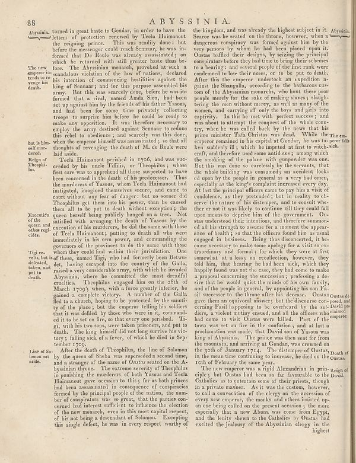

Scan ID britannica:309f765b1ecc83e0a7f7762e44b4a927a7555443:train:2570
Image SHA-256 364adfefc0b17833777e04973fd5d32fe490446622be257cba01f40a110e77ae
Status: ok. Running header: 88 ABYSSINIA. (article_title). Removed page furniture: Page-header: 88 ABYSSINIA..
PDF · raw Parse reply · LaTeX
Entries: ABYSSINIA

| # | Class | Box | Parse 3.5 | Used text | Source |
|---|---|---|---|---|---|
| 1 | Caption | [0.0732, 0.0641, 0.1484, 0.0883] | Abysinia. | Abyssinia. | super_vl |
| 2 | Text | [0.0742, 0.1367, 0.1338, 0.1961] | The new amperor in- texts to revenge la death. | The new emperor intends to revenge his death. | super_vl |
| 3 | Text | [0.0752, 0.4562, 0.1445, 0.5172] | Executive of the queen and other regt- side. | Execution of the queen and other regicides. | super_vl |
| 4 | Text | [0.0762, 0.5375, 0.1455, 0.6078] | Tigi re- whis, but is defecate, taken, and put to death. | Tigi revolts, but is defeated, taken, and put to death. | super_vl |
| 5 | Text | [0.0771, 0.7508, 0.1426, 0.7852] | Lice of So- lonon set aside. | Lice of So- lonon set aside. | super_vl |
| 6 | Text | [0.0781, 0.7867, 0.5293, 0.9258] | After the death of Theophilus, the line of Solomon by the queen of Sheba was superseded a second time, and a stranger of the name of _Outsay seated on the Abyusina theme._ The extreme severity of Theophilus in punishing the murderers of both Yasuous and Techa Hanamout gave occasion to this, for all the prime had been assassination in consequence of compatriots formed by the principal people of the nation, the number of congriators was as great, that the parties con-cerned had interns sufficient to influence the election of the new monarch, even in this most capital respect, of his not being a | and a stranger of the name of Outsas seated on the Abyssinian throne. The extreme severity of Theophilus in punishing the murderers of both Yasous and Tecla Haimanout gave occasion to this; for as both princes had been assassinated in consequence of conspiracies formed by the principal people of the nation, the number of conspirators was so great, that the parties concerned had interest sufficient to influence the election of the new monarch, even in this most capital respect, of his not being a descendant of Solomon. Excepting this single defect, he was in every respect worthy of | super_vl |
| 7 | Text | [0.5371, 0.057, 0.9863, 0.0758] | the kingdom, and was already the highest subject in it. Abysinia. | the kingdom, and was already the highest subject in it. Abyssinia. Scarce was he seated on the throne, however, when a | super_vl · expanded_beyond_parse |
| 8 | Text | [0.5381, 0.0773, 0.9873, 0.7898] | Source: was he seated on the throne, however, when a dangerous conspiracy was formed against him by the very person by whom, he had been given upon it. Oostas halloff over designs, by starting the principal conspirator before they had time to bring their schemes to a learning; and several people of the life tank were condemned to bear their money, or to be put to death. After this the emperor undertook an expedition at ganas in Shangulla, according to the behaviour cust- om of the Abysanian romarhets, who hunt these poor people merely for the sake of making always s singhtering the men without | Source: was he seated on the throne, however, when a dangerous conspiracy was formed against him by the very person by whom he had been placed upon it. Oustas baffled their designs, by seizing the principal conspirators before they had time to bring their schemes to a bearing: and several people of the first rank were condemned to lose their noses, or to be put to death. After this the emperor undertook an expedition against the Shangalla, according to the barbarous custom of the Abyssinian monarchs, who hunt these poor people merely for the sake of making slaves; slaughtering the men without | super_vl |
| 9 | Text | [0.5391, 0.7891, 0.9883, 0.9414] | The new supreme is a rigid Alexandrian in pin-legging of ciple; but Ostas had been so far favourable to the David. Catholics as to entertain some of their priest, though in a private manner. At it was the custom, however, to call a conviction of the clergy on the recession of every new company, the masks and others insisted up- on one being pulled on the present occasion; the more especially that a new Albuna was come from Egypt, and the leuty shawn to the Catholics by Oustas had excited the jalousy of the Abysinian clergy in the highest | The new emperor was a rigid Alexandrian in prin- ciple; but Oustas had been so far favourable to the David. Catholics as to entertain some of their priests, though in a private manner. As it was the custom, however, to call a convocation of the clergy on the accession of every new emperor, the monks and others insisted up- on one being called on the present occasion; the more especially that a new Abuna was come from Egypt, and the lenity shewn to the Catholics by Oustas had excited the jealousy of the Abyssinian clergy in the highest | super_vl |
Britannica scans: National Library of Scotland, CC0 1.0. Wikipedia text: Wikipedia contributors, CC BY-SA 4.0, revision links on each page. Generated 2026-10-18T13:26:14+00:00.